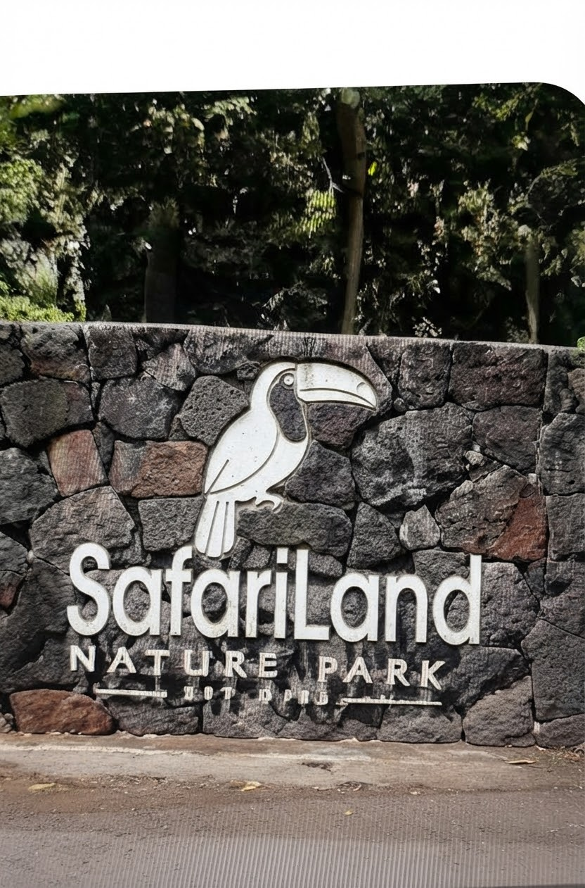

The Park
SafariLand
A Wild World to Explore.
An Adventure That Brings Nature to Life.
Beyond the river and beneath the mountains, a world of discovery is waiting. SafariLand is a place where winding trails lead to surprising encounters, where animals roam in habitats inspired by the wild, and where every bend in the river brings a new story.

Set out on an adventure, take on exciting activities, and discover the wonders of the natural world at your own pace.
But SafariLand is more than a day of fun. It's a journey into a living landscape, one that invites you to look closer, learn more, and leave with a deeper connection to nature.
The Park & Map